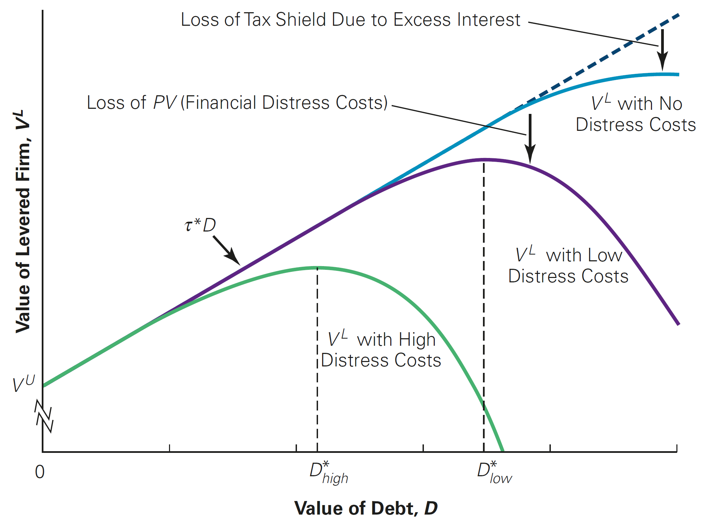

Financial Distress, Managerial Incentives, and Information
Outline
This lecture is mainly based the following textbooks:
Study review and practice: I strongly recommend using Prof. Henrique Castro (FGV-EAESP) materials. Below you can find the links to the corresponding exercises related to this lecture:
- Multiple Choice Exercises - click here
\(\rightarrow\) For coding replications, whenever applicable, please follow this page or hover on the specific slides with coding chunks.
Default and Bankruptcy in Perfect Markets
An important consequence of leverage is the risk of bankruptcy:
- Although equityholders hope to receive dividends, the firm is not legally obligated to pay
- On the other hand, debtholders have an enforceable claim over the firms cash flow and may require the payment regardless of the state of the economy
When a firm has difficulty meeting its debt obligations, we say that it is in Financial Distress:
- There can be delays in payments from principal and interest amounts
- When a firm fails to make the required interest or principal payments on its debt or violates conditions established on its debt contracts, we say that a firm is in default
\(\rightarrow\) After the firm defaults, debtholders are given certain rights to the assets of the firm and may even take legal ownership of the firm’s assets through bankruptcy
Default and Bankruptcy in Perfect Markets
- Why is bankruptcy and default so important? In order to see that, consider that Armin, a firm that is considering a new project. Although the new product represents a significant advance over the firms’ competitors’ products, the product’s success is uncertain:
- If it succeeds, Armin will be worth \(\small \$150\) million at the end of the year
- If it fails, Armin will be worth only \(\small \$80\) million
- As in previous lectures, Armin may employ one of two alternative capital structures to integrate this project:
- It can use all-equity financing
- It can use debt that matures at the end of the year with a total of \(\small \$100\) million due
\(\rightarrow\) The next slides will show how the funding structure affect the value of Armin in both states of the economy
Default and Bankruptcy in Perfect Markets
| All-Equity | All-Equity | Leverage | Leverage | |
|---|---|---|---|---|
| Success | Failure | Success | Failure | |
| Debt Value | - | - | $100 | $80 |
| Equity Value | $150 | $80 | $50 | $0 |
| All Investors | $150 | $80 | $150 | $80 |
Both debt and equity holders are worse off if the product fails rather than succeeds:
- Without leverage, equity holders lose \(\small (\$150-\$80)=\$70\)
- With leverage, equity holders lose \(\small \$50\) million, and debt holders lose \(\small \$20\) million, but the total loss is the same, \(\small \$70\) million
Importantly, since the firms is worth \(\small \$80\) and debt is \(\small \$100\), the firm is in default if the project fails with leverage!
Default and Bankruptcy in Perfect Markets
- Note that the decline in value is not caused by bankruptcy, as such decline is the same whether or not the firm has leverage. As a consequence, the value of the firm is essentially the same. Assuming that both states are equally likely and a \(\small5\%\) discount rate:
\[ \small V^U= \dfrac{\dfrac{1}{2}\times 150 + \dfrac{1}{2}\times80}{(1+5\%)}=109.52\\ \]
\[ \small V^L= \dfrac{\overbrace{\dfrac{1}{2}\times 100 + \dfrac{1}{2}\times80}^{\text{Debtholders}}+ \overbrace{\dfrac{1}{2}\times 50 + \dfrac{1}{2}\times0}^{\text{Equityholders}}}{(1+5\%)}=\dfrac{115}{(1+5\%)}=109.52 \]
\(\rightarrow\) With perfect capital markets, Modigliani and Miller (MM) Proposition I applies: the total value to all investors does not depend on the firm’s capital structure
Bankruptcy and Financial Distress Costs
With perfect capital markets, we saw that the risk of bankruptcy is not a disadvantage of debt:
- The value of the levered firm, \(\small V^L\), is exactly the same as of the unlevered one, \(\small V^U\)
- Rather, bankruptcy shifts the ownership of the firm from equityholders to debtholders without changing the total value available to all investors
In reality, however, a bankruptcy process is a complex, time-consuming, and costly process:
- Costly outside experts are often hired by the firm to assist with the bankruptcy.
- Creditors also incur similar costs during the bankruptcy process: they may wait several years to receive payment, and may hire their own experts for legal and professional advice
We refer to these costs as the direct costs of bankruptcy, as they reduce the value of the assets that the firm’s investors will ultimately receive: it is estimated that the average direct costs of bankruptcy are approximately \(\small 3\%-4\%\) of the pre-bankruptcy market value of total assets
Bankruptcy and Financial Distress Costs
On top of the direct costs associated due bankruptcy and financial distress, a firm can also suffer from the indirect costs of bankruptcy
- Loss of Customers
- Loss of Suppliers
- Loss of Employees
- Loss of Receivables
- Fire Sale of Assets
- Delayed Liquidation
- Costs to Creditors
Due to its nature, although indirect costs are difficult to measure accurately, they are often much larger than the direct costs of bankruptcy
The estimated potential loss due to financial distress is around \(\small 10\%-20\%\) of firm value
Accounting for Default and Bankruptcy Costs
Let’s go back to our previous example on Armin. How do bankruptcy costs fit into that situation?
- With all-equity financing, the firms’ assets will be worth \(\small\$150\) million if its new product succeeds, and \(\small\$80\) million if the new product fails
- However, we have not assumed that there were any financial distress costs!
Say that, after some calculations, Armin has estimated financial distress costs of \(\small \$20\) million
- With debt outstanding worth \(\small\$100\) million, Armin will be forced into bankruptcy if the new product fails!
- In this case, some of the value of the firms’ assets will be lost to bankruptcy and financial distress costs
\(\rightarrow\) As a result, debt holders will receive less than 80 million!
Accounting for Default and Bankruptcy Costs, continued
In this case, debtholders receive only \(\small \$80-\$20=\$60\) million after accounting for the costs of financial distress
These costs will lower the total value of the firm with leverage, \(\small V^L\) and Modigliani and Miller’s Proposition I will no longer hold: the total value to all investors is less with leverage than it is without leverage when the new product fails!
| All-Equity | All-Equity | With Leverage | With Leverage | |
|---|---|---|---|---|
| Success | Fail | Success | Fail | |
| Debt Value | - | - | $100 | $60 |
| Equity Value | $150 | $80 | $50 | $0 |
| All Investors | $150 | $80 | $150 | $60 |
Firm value under Bankruptcy Costs
- We can now recalculate the firm’s value under the assumption that there are direct and/or indirect costs of bankruptcy:
\[ \small V^U = \dfrac{\dfrac{1}{2} \times 150 + \dfrac{1}{2} \times 80}{(1+5\%)}= \dfrac{130}{(1+5\%)}= 109.52\\ \]
\[ \small V^L= \dfrac{\overbrace{\dfrac{1}{2} \times 100+\dfrac{1}{2}\times60}^{\text{Debtholders}}+\overbrace{\dfrac{1}{2} \times 50+\dfrac{1}{2}\times 0 }^{\text{Equityholders}}}{(1+5\%)}= \dfrac{105}{(1+5\%)}=100 \]
- The difference between \(\small V^U\) and \(\small V^L\), \(\small\$109.52 − \$100 = \$9.52\) million is the loss in value due to financial distress. These costs will lower the total value of the firm with leverage, \(\small V^L\), and Modigliani and Miller’s Proposition I will no longer hold!
Who pays for Financial Distress Costs?
We saw that the value of the levered firm, \(\small V^L\), was lower due to the financial distress costs. An important question regarding financial distress costs is who ultimately bears it:
- For Armin, if the new product fails, equityholders lose their investment in the firm and will not care about bankruptcy costs ex-ante
- However, debtholders recognize that if the new product fails and the firm defaults, they will not be able to get the full value of the assets
As a result, debtholders will require to pay less for the debt:
- If the debt holders initially pay less for the debt, less money is available for the firm to pay dividends, repurchase shares, and make investments.
- Ultimately, this difference comes out of the equity holders’ pockets!
\(\rightarrow\) When securities are fairly priced, the original shareholders of a firm pay the present value of the costs associated with bankruptcy and financial distress!
Who pays for Financial Distress Costs? Continued
If debtholders pay less for the debt initially, by how much precisely is this difference? To see that, that at the beginning of the year, Armin Industries has \(\small 10\) million shares outstanding and no debt. Armin then announces plans to issue one-year debt with a face value of \(\small \$100\) million and to use the proceeds to repurchase shares
- As shown before, the value of the unlevered firm, \(\small V^U\), is \(\small \$109.52\) million
- With \(\small 10\) million shares outstanding, this corresponds to a share price of \(\small \$10.952\) per share before any recapitalization
- In anticipation of the recap, the total value of the firm drops to \(\small \$100\) million, and the price per share is now only \(\small \$10\) on the announcement
Due to financial distress costs, the present value of debt is:
\[ D=\small \dfrac{\small 1/2\times80+1/2\times 0}{(1+5\%)}=76.19 \text{ million} \]
Who pays for Financial Distress Costs? Continued
From the data in the previous slide, Armin will be able to issue \(\small\$76.19\), instead of \(\small \$80\), and this translates to buying \(\small 7,619\) shares, leaving \(\small 2,381\) outstanding
As the value of the levered equity is \(\small \$23.81\), the share price is now only \(\$10\) per share. All in all, all shareholders1 are worse off by:
\[ \small \underbrace{(10.952-10.00)}_{\text{Unlevered - Levered Equity}}\times \underbrace{10,000,000}_{\text{Shares outstanding}}=9.52 \text{ million} \]
- This difference in value is exactly the decrease in firm value due to financial distress costs!
\(\rightarrow\) Although debt holders bear these costs in the end, shareholders pay the present value of the costs of financial distress up front, and ultimately born the costs of financial distress!
Reconciling Financial Distress with Capital Structure
Let’s take a step back and recall what we have defined in earlier classes:
- Under perfect capital markets, the value of the levered firm, \(\small V^L\), was identical to the value of an all-equity firm, \(\small V^U\)
- When we assume that there are tax imperfections, such as the fact that interest expenses are tax-deductible, we saw that the value levered firm could increase by the same amount as of the present value of the tax-shiedls:
\[ \small V^L= V^U+PV(ITS) \]
- If that is true, then why firms do not always have high leverage? As it turns out, if we assume the existence of financial distress costs, increased leverage may get to a point where the benefits of debt are fully offset by the costs of financial distress!
The Trade-off Theory
Definition
The Trade-off Theory states that the firm picks its capital structure by trading off the benefits of the tax shield from debt against the costs of financial distress and agency costs.
According to the theory, the total value of a levered firm, \(\small V^L\) equals the value of the firm without leverage plus the present value of the tax savings from debt, less the present value of financial distress costs:
\[ V^L = V^U + PV(ITS) - PV(\text{Financial Distress Costs}) \]
There are basically three key factors determine the present value of financial distress costs:
- The probability of financial distress
- The magnitude of the costs after a firm is in distress
- The appropriate discount rate for the distress costs
Factors that determine the value of distress costs
There are basically three key factors determine the present value of financial distress costs:
- The probability of financial distress
- The probability of financial distress increases with the amount of a firm’s liabilities (relative to its assets)
- It also increases with the volatility of a firm’s cash flows and asset values
- The magnitude of the costs after a firm is in distress
- Financial distress costs will vary by industry, and depend on factors such as asset redeployability
- The appropriate discount rate for the distress costs
- Depends on the firm’s market risk
- The present value of distress costs will be higher for high beta firms
- The probability of financial distress
Implications of the the Trade-off Theory
An implication of the Trade-Off Theory is that each firm will have an optimal leverage level:
- For low levels of debt, the risk of default remains low, and the main effect of an increase in leverage is an increase in the interest tax shield
- As the level of debt increases, the probability of default increases. Then, the costs of financial distress increase, reducing the value of the levered firm
- The Trade-off Theory states that firms should increase their leverage until it reaches the level for which the firm value is maximized - in order words, the capital structure choice in terms of % of debt and equity is chosen so as solve:
\[ \small \max V^L_{\{\%E,\%D\}} = V^U + PV(ITS) - PV(\text{Financial Distress Costs}) \]
- At the optimal, the tax savings that result from increasing leverage are perfectly offset by the increased probability of incurring the costs of financial distress
The Trade-off Theory and Optimal Leverage

The Trade-off Theory, practice
Holland is considering adding leverage to its capital structure. Holland’s managers believe they can add as much as \(\small \$50\) million in debt and exploit the benefits of the tax shield. They estimate that the corporate tax rate is \(\tau_c = 39\%\). However, they also recognize that higher debt increases the risk of financial distress. Based on simulations of the firm’s future cash flows, the CFO has made the following estimates (in millions of dollars):
| Debt-to-Value | 0% | 10% | 20% | 30% | 40% | 50% |
|---|---|---|---|---|---|---|
| PV(Int. Tax. Shield) | - | $3.9 | $7.8 | $11.7 | $15.6 | $19.5 |
| PV(Fin. Dis. Costs) | - | $0 | $0 | $3.38 | $19.23 | $23.47 |
Question: what of debt should the firm choose?
The Trade-off Theory, practice
Holland is considering adding leverage to its capital structure. Holland’s managers believe they can add as much as \(\small \$50\) million in debt and exploit the benefits of the tax shield. They estimate that the corporate tax rate is \(\tau_c = 39\%\). However, they also recognize that higher debt increases the risk of financial distress. Based on simulations of the firm’s future cash flows, the CFO has made the following estimates (in millions of dollars):
| Debt-to-Value | 0% | 10% | 20% | 30% | 40% | 50% |
|---|---|---|---|---|---|---|
| PV(Int. Tax. Shield) | - | $3.9 | $7.8 | $11.7 | $15.6 | $19.5 |
| PV(Fin. Dis. Costs) | - | $0 | $0 | $3.38 | $19.23 | $23.47 |
| Net Benefit | - | $3.9 | $7.8 | $8.32 | $-3.63 | $-3.97 |
\(\rightarrow\) Solution: the level of debt that leads to the highest net benefit is 30 million. Holland will gain \(\small\$11.7\) million due to tax shields and lose \(\small \$3.38\) million due to the present value of financial distress costs, for a net gain of \(\small \$8.32\) million.
The Agency Costs of Leverage
Apart from any direct costs and benefits from increased leverage, debtholders may also be concerned around which managerial actions will be taken after debt is in place - and whether it will ultimately lead to increasing indirect costs to them
The potential costs due to misalignment between different stakholders of the firm are called Agency Costs
Definition
Agency Costs are costs that arise when there are conflicts of interest between the firm’s stakeholders:
- Management will generally make decisions that increase the value of the firm’s equity
- However, when a firm has leverage, managers may make decisions that benefit shareholders but harm the firm’s creditors and lower the total value of the firm
The Agency Costs of Leverage, continued
Although not directly measurable, Agency Costs can vary significantly and have a substantial impact on the value of the levered firm
Under Modigliani and Miller’s hypotheses for Perfect Capital Markets, there are no Agency Costs - this is embedded in the assumption that there are no transaction costs and/or information asymmetry
Examples of managerial actions that are supposedly costly for debtholders are:
- Risk-taking & Asset Substitution
- Debt overhang & Under-investment
- Cashing out
- Leverage Ratchet effect
Risk-taking & Asset Substitution
Definition
When a firm faces financial distress, shareholders can gain at the expense of debt holders by taking a negative-NPV project if it is sufficiently risky - also called risk-shifting problem
- Consider that Baxter is facing a situation of Financial Distress:
- It has a loan of \(\small \$1\) million due at the end of the year
- Without a change in its strategy, the market value of its assets will be only \(\small \$900,000\) at that time, and the firm will default on its debt
- Baxter’s manager are considering a new strategy that requires no upfront investment, but it has only a \(\small50\%\) chance of success:
- If the new strategy succeeds, it will increase the value of the firm’s asset to \(\small\$1.3\) million.
- If the new strategy fails, the value of the firm’s assets will fall to \(\small\$300,000\).
Risk-taking
Question: should Baxter execute this strategy?
- To see that, note that the expected value of the firm’s assets under the new strategy is \(\small \$800,000\), a decline of \(\small\$100,000\) from the old strategy:
\[ \small V^L_{\text{New}}=\small 50\% \times 1.3 + 50\% \times 0.3 = 0.8 \text{ million} \]
Why managers would even consider this strategy? It is important to note that, if Baxter does nothing, it will ultimately default and equity holders will get nothing with certainty. In words:
- Equity holders have nothing to lose if Baxter tries the risky strategy
- If the strategy succeeds, equity holders will receive \(\small\$300,000\) after paying off the debt
- Given a \(\small50\%\) chance of success, the equityholders’ expected payoff is actually positive
\[ \small E^L_{\text{New}}=50\% \times 0 + 50\% \times 300,000 = 150,000 \]
Risk-taking, continued
| Old Strategy | New - Success | New - Failure | New - Exp. | |
|---|---|---|---|---|
| \(V^L\) | $900 | $1,300 | $300 | $800 |
| Debt | $900 | $1,000 | $300 | $650 |
| Equity | $0 | $300 | $0 | $150 |
- Note that, in such a way, equityholders are gambling with the debt holders’ money:
- If project succeeds, debt holders receive \(\small \$1\) million
- If fails, debt holders receive \(\small\$300,000\)
- Debtholders’ expected payoff is \(\small\$650,000\), a loss of \(\small\$250,000\) compared to the old strategy:
\[ \small 50\% \times 1,000,000 + 50\% \times 300,000 = 650,000 \text{ million} \]
\(\rightarrow\) This loss corresponds to the 100,000 expected decline in firm value due to the risky strategy and the equityholder’s 150,000 gain
Asset Substitution
As we saw before, if managers are acting on behalf of shareholders, they may choose to gamble with debtholder’s money by choosing projects that with asymmetrical payoffs (in expectation, benefits shareholders at the expense of debtholders)
A way to materialize this is to choose projects that are risky enough so that shareholders are better-off if the project is succesfull:
- Shareholders have an incentive to invest in negative-NPV projects that are risky, even though a negative-NPV project destroys value for the firm overall
- Anticipating this bad behavior, security holders will pay less for the firm initially
Debt Overhang and Under-Investment
The previous example has shown how potential misalignments between debtholders and bondholders may result in a move towards more risky projects
What if, on the other hand, there are actually less risky projects that would otherwise increase the firm’s NPV?
Definition
Debt Overhang (or simply Under-Investment) is a situation in which equity holders choose not to invest in a positive NPV project because the firm is in financial distress and the value of undertaking the investment opportunity will accrue to bondholders rather than themselves
\(\rightarrow\) As a results, when a firm faces financial distress, it may choose not to finance new, positive-NPV projects!
Debt Overhang and Under-Investment, continued
Assume that Baxter does not pursue the risky strategy, but instead the firm is considering an investment opportunity that requires an initial investment of \(\small\$100,000\) and will generate a risk-free return of \(\small50\%\)
If the current risk-free rate is \(\small5\%\), this investment clearly has a positive NPV
- What if Baxter does not have the cash on hand to make the investment?
- Could Baxter raise \(\small\$100,000\) in new equity to make the investment?
Question: would managers, acting on behalf of the shareholders, be willing to raise funding and invest in this project?
Debt Overhang and Under-Investment, continued
| Without project | With new project | |
|---|---|---|
| Existing assets | $900 | $900 |
| New project | - | $150 |
| Total firm value | $900 | $1,050 |
| Debt | $900 | $1,000 |
| Equity | $0 | $50 |
- If equityholders contribute \(\small 100,000\) to fund the project, they get back only \(\small\$50,000\)
- The other \(\small\$100,000\) from the project accrues to debtholders, whose payoff increases from \(\small\$900,000\) to \(\small\$1,000,000\). As a consequence, the payoff to equityholders is negative: \(\small NPV = -100,000 + 50,000=-\$50,000\)
\(\rightarrow\) As debtholders receive most of the benefit, thus this project is a negative-NPV investment opportunity for equityholders, even though it offers a positive NPV for the firm!
Cashing Out
- If it is likely the company will default, the firm may sell assets below market value and use the funds to pay an immediate cash dividend to the shareholders
Definition
Cashing out is a situation where shareholders are more likely to liquidate assets and return back to shareholders, even if this is a negative-NPV transaction. When in financial distress, shareholders have an incentive to withdraw money from the firm, if possible.
Ultimately, if the firm defaults, as debtholders seize the assets, they may have even more difficulties in liquidating them as they do not understand the business:
For example, Tiffany is worth more in the hands of LVMH rather than a bank due to the potential synergy benefits
This helps explaining why, in some cases, a takeover from another firm within the same industry may preserve more value than an asset liquidation by banks!
The Leverage Ratchet Effect
As shown before, when an unlevered firm issues new debt, equityholders will bear any anticipated agency/bankruptcy costs that might affect the firm
A different story arises when our starting point is a levered firm: once a firm has debt already in place, some of the agency or bankruptcy costs that result from taking on additional leverage will fall on existing debtholders:
- Shareholders may have an incentive to increase leverage even if it decreases the value of the firm, and
- Shareholders will not have an incentive to decrease leverage by buying back debt, even if it will increase the value of the firm
While it will induce firms to borrow less initially in order to avoid these costs, over time it may lead to excessive leverage as shareholders prefer to increase, but not decrease, the firm’s debt
For instance, by reducing debt, equity holders lose their incentive to take on a risky negative NPV investment
Default and Bankruptcy
How to prevent bankruptcy events from the perspective of a debtholder? One way of doing so is establishing debt covenants:
Debt covenants are conditions (both positive or negative) that lenders (creditors, debt holders, investors) put on lending agreements to limit the actions of the borrower (debtor)
In other words, debt covenants are agreements between a company and its lenders that the company will operate within certain rules set by the lenders
When a debt covenant is violated, depending on the severity, the lender can do several things:
- Demand penalty payment
- Increase the predetermined interest rate
- Increase the amount of collateral
- Demand full immediate repayment of the loan
- Terminate the debt agreement
Positive and Negative Covenants
Positive Debt Covenants are covenants that state what the borrower must do:
- Achieve a certain threshold in certain financial ratios
- Ensure facilities and factories are in good working condition
- Perform regular maintenance of capital assets
- Provide yearly audited financial statements
- Ensure accounting practices are in accordance accounting principles
Negative Debt Covenants are covenants that state what the borrower cannot do:
- Pay cash dividends over a certain amount or predetermined threshold
- Sell certain assets
- Limitations on borrowing more debt
- Issue debt more senior than the current debt
- Enter into certain types of agreements or leases
The Agency Benefits of Leverage
So far, we assumed that managers act in the interests of the firm’s equityholders, and we considered the potential conflicts of interest between debtholders and equityholders when a firm has leverage
Notwithstanding, managers also have their own personal interests, which may differ from those of both equity and debtholders - also known as management entrenchment:
- Facing little threat of being fired and replaced, managers are free to run the firm in their own best interests
- As a result, managers may make decisions that benefit themselves at investors’ expense
How can a firm insulate from this issue? In what follows, we will see that leverage can provide incentives for managers to run the firm more efficiently and effectively
Together with other benefits we will describe, in addition to the tax benefits of leverage, give the firm an incentive to use debt rather than equity!
Management Entrenchment
Definition
Management Entrenchment is a situation arising as the result of the separation of ownership and control in which managers may make decisions that benefit themselves at investors’ expenses
- Entrenchment may allow managers to run the firm in their own best interests, rather than in the best interests of the shareholders:
- Nepotism and personal tastes
- Spending on perks, like private jets
How can leverage prevent this issue?
Leverage can reduce the degree of managerial entrenchment because managers are more likely to be fired when a firm faces financial distress
In addition, when the firm is highly levered, creditors themselves will closely monitor the actions of managers, providing an additional layer of management oversight
Concentration of Ownership
Another advantage of using leverage is that it allows the original owners of the firm to maintain their equity stake in the company (i.e, avoids the dilution of their participation). With “skin in the game”, they are likely having more interest in doing what is best for the firm
To see that, assume that you are the owner of a firm and plans to expand. You can either borrow the funds needed for expansion or raise the money by selling shares in the firm:
- If issuing equity, you will need to sell \(\small40\%\) of the firm to raise the necessary funds
- If issuing debt, you retain full ownership of the firm
As we will see, having higher ownership will provide additional incentives to run the firm more efficiently
Concentration of Ownership, continued
Without leverage
If you sell new shares, you will only retain 60% ownership and only receive 60% of the increase in firm value: if the value largely depends on your personal effort, you’d have more incentives if you kept \(\small100\%\) of the firm
Having \(\small60\%\), you would be more tempted to overspend in perks: by selling equity, you bear only \(\small60\%\) of the perks costs, while the other \(\small40\%\) will be paid for by the new equityholders
How can leverage prevent this issue?
- With leverage, you retain full ownership and will bear the full cost of any “perks,” like country club memberships or private jets
- Is likely that you work harder as you will receive 100% of the increase in firm value
- Furthermore, since you bear the totality of the perks’ cost, you would not less tempted to overspend
Reduction of Wasteful Investment
- Another concern for is that managers may make large, unprofitable investments:
- For example, managers may engage in empire building by taking over companies - this may increase his/her individual utility but not the value of the firm!
- They often prefer to run larger firms rather than smaller ones, so they will take on investments that increase the size, but not necessarily the profitability, of the firm
As a consequence, managers may expand unprofitable divisions, pay too much for acquisitions, make unnecessary capital expenditures, or hire unnecessary employees
Having leverage limits these actions as debtholders may prevent empire building through covenants - note that this can also benefit equityholders
Managerial Overconfidence
Managers may over-invest because they are overconfident: they tend to be bullish on the firm’s prospects and may believe that new opportunities are better than they actually are
Debt forces managers to be more realistic with the true prospects of the firm because they have the commitment to pay back debtholders
Free Cash Flow Hypothesis
The occurrence of wasteful investments and room for managerial overconfidence is fueled by the fact that a firm has resources (cash) to invest
However, when cash is tight, managers may be motivated to run the firm more efficiently:
- Managers cannot over-invest or put money on risky bets as there’s not enough cash
- As a consequence, they may totally avoid these negative-NPV transactions
Definition
The Free Cash Flow Hypothesis is the view that wasteful spending is more likely to occur when firms have high levels of cash flow in excess of what is needed after making all positive-NPV investments and payments to debt holders
- In such a way, leverage may increase firm value because it commits the firm to making future interest payments, thereby reducing excess cash flows and wasteful investment by managers
Netting out Agency Costs and Benefits
- We saw that, when adding leverage, there are both expected positive and negative effects:
- On the one hand, leverage encourage managers to act in ways that reduce value:
- It appears that the equity holders benefit at the expense of the debt holders
- However, ultimately, it is the shareholders of the firm who bear these agency costs.
- On the other hand, leverage also has benefits that might increase value:
- Having leverage limits the extent to which managers may engage in negative-NPV transactions
- It also disciplines managers to run the firm as efficiently as possible
Question: how would you estimate net effect of leverage on the firm value?
Agency Costs and the Trade-off Theory
- Estimating the net effect of Agency Costs and Benefits is an empirical matter, and despite that fact that we do not know with certainty what the value is, it is rational to assume that firms would pursue an optimal debt level by taking into account both agency costs and benefits:
\[ \small V^L = V^U + PV(ITS) - PV(\text{Financial Distress Costs})- PV(\text{Agency Costs}) + PV(\text{Agency Benefits}) \]
R&D-Intensive Firms
- Firms with high R&D costs and future growth opportunities typically maintain low debt levels
- These firms tend to have low current free cash flows and risky business strategies
Low-Growth, Mature Firms
- Mature, low-growth firms with stable cash flows and tangible assets often carry more debt
- These firms tend to have high free cash flows with few good investment opportunities
Asymmetric Information
- Another assumption of Perfect Capital Markets is the fact that there is no information asymmetry - i.e, all market agents act upon the same set of information
Definition
Asymmetric Information is a situation in which parties have different information. For example, when managers have superior information to investors regarding the firm’s future cash flows.
If we depart from this assumption, can asymmetric information be related to leverage? The Signaling Theory of Debt implies a relationship between the degree of information asymmetry and the level of debt:
- Leverage is used as a way to signal information to investors
- A firm can use leverage as a way to convince investors that it does have information that the firm will grow, even if it cannot provide verifiable details about the sources of growth
Adverse Selection, a general example
Whenever we allow for information asymmetry, we no longer guarantee that all agents operate on the same level of information: for example, there might be more informed traders (such as insider traders) that have a different estimate for a firm’s value
What happens if one party anticipates that the other party has different information?
Adverse Selection is the idea that when the buyers and sellers have different information, the average quality of assets in the market will differ from the average quality overall
- A manifestation of adverse selection in any market is known as the “Lemons Principle”: when a seller has private information about the value of a good, buyers will discount the price they are willing to pay due to adverse selection
- If the seller has private information about the quality of the car, then her desire to sell reveals the car is probably of low quality
- Buyers are therefore reluctant to buy except at heavily discounted prices
Adverse Selection in Capital Markets
The Lemons Principle is widely used to depict a situation of adverse selection. There are implications for both high and low quality cars:
- Owners of high-quality cars are reluctant to sell because they know buyers will think they are selling a “lemon” and would only do it at a low price
- Consequently, the only cars that remain the market are the ones where both quality and prices are low
Notwithstanding, this same principle can be applied to the market for equity:
- Firms that are willing to issue new equity have private information about the quality of the firm’s future projects
- However, due to adverse selection, buyers are reluctant to believe management’s assessment of the new projects and are only willing to buy the new equity at heavily discounted prices - if any, why would the firm sell equity at a given price?
Adverse Selection in Capital Markets
- In other words:
- If the firm is issuing equity at market prices, it must be that managers think the stock is expensive
- If the firm is buying back shares at market prices, it must be that managers think the stock is cheap
Asymmetric Information, practice
You are an analyst who follows Great Windows’ stock. Although the current stock price is \(\small \$37.50\), you believe the stock is worth either \(\small \$25\) or \(\small \$50\), depending on the success of a new product launch. If Great Windows’ CEO announces that she plans to buy \(\small 10,000\) additional shares in the company, how will the share price change?
\(\rightarrow\) Solution
- If the CEO knows the new product launch is a failure, she would sell the stock at \(\small \$37.50\) given that the she knows true value is \(\small \$25\)
- If the CEO announces that she is buying \(\small 10,000\) additional shares, she must know that the new product launch is a success and the true value is \(\small \$50\) per share
- Thus, the stock price should rise to \(\small \$50\).
The Pecking Order of Financing Choices
What does information asymmetry tells us when it comes to financing options? Considering, it is important to note that these options have different degrees of information asymmetry
For example, managers who perceive the firm’s equity is underpriced will have a preference to fund investment using retained earnings, or debt, rather than equity.
Therefore, the Pecking-Order Theory of financing choices states a rank-ordering in terms of the preferable funding options for a firm:
- First and foremost, firms prefer to finance investments with internally-generated funds, as these suffer less from information asymmetry
- If external finance is required, firms issue the safest security first: they start with debt, then possibly hybrid securities, such as convertible bonds, then equity as a the last resort
Asymmetric Information, practice
Nesbat Industries needs to raise \(\small \$25\) million for a new investment project. If the firm issues one year debt, it may have to pay an interest rate of \(\small 10\%\), although Nesbat’s managers believe that \(\small 8\%\) would be a fair rate given the level of risk. However, if the firm issues equity, they believe the equity may be underpriced by \(\small 7.5\%\). What is the cost to current shareholders of financing the project out of retained earnings, debt, and equity?
\(\rightarrow\) Solution
If the firm spends \(\small \$25\) million out of retained earnings, rather than paying that money out to shareholders as a dividend, the cost to shareholders is \(\small \$25\) million
Using debt costs the firm pays \(\small \$25 \times (1+10\%) = \$27.5\) million in one year, which has a present value based on management’s view of the firm’s risk of \(\small \$27.5/(1+8\%)= \$25.46\) million
Finally, if equity is underpriced by \(\small 7.5\%\), then to raise \(\small \$25\) million, the firm will need to issue \(\small 25/(1-7.5\%) = \small \$27.03\) million of new equity. Thus, the cost to existing shareholders will be \(\small \$27.03\) million
Practice
Important
Practice using the following links: